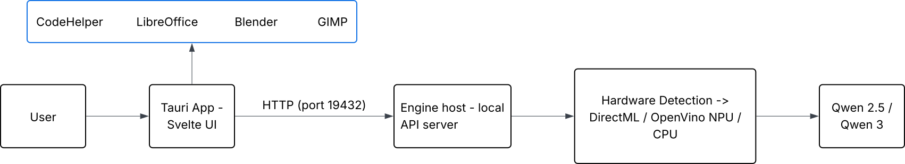
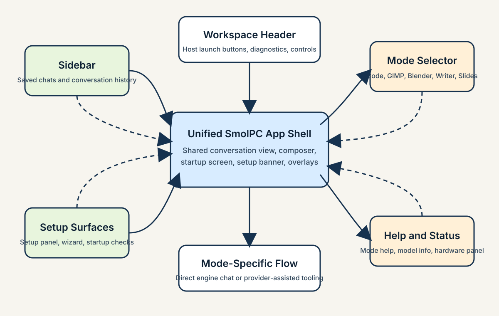
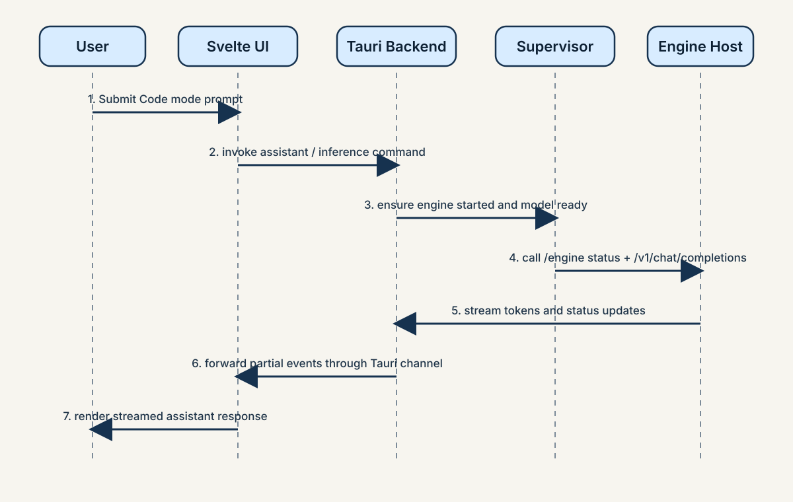
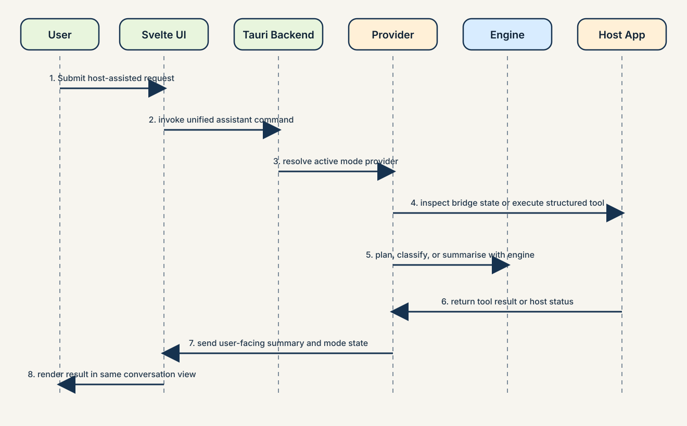

System Design
System Architecture
SmolPC 2.0 is implemented as one unified Tauri desktop application in app/, backed by a shared Rust inference engine in engine/ and host-application connector crates in connectors/. The frontend never owns inference or tool execution directly. Instead, the Svelte shell calls Tauri commands, the Tauri backend resolves the active mode, and the backend either streams text through the shared engine or dispatches to a host-aware provider. This architecture keeps lifecycle, backend selection, authentication, and offline runtime state in one place while still allowing GIMP, Blender, Writer, and Slides to use different execution paths.
High-Level Architecture Diagram

The implemented stack is layered. The Svelte frontend provides the shared shell, conversation view, overlays, and setup surfaces. The Tauri backend owns command handling, setup status, host launching, and provider routing. The shared engine owns startup, health, runtime selection, model loading, chat generation, transcription, and text-to-speech proxying. Connector crates bridge the unified shell to external tools such as GIMP, Blender, and LibreOffice without pushing host-specific logic into the frontend.
Core Components
Unified App Shell
The live integrated app is the Tauri 2 + Svelte 5 shell under app/. It exposes one interface for Code, GIMP, Blender, Writer, and Slides, and reuses shared UI components such as the sidebar, mode dropdown, setup banner, setup panel, help drawer, model and hardware overlays, startup loading screen, conversation view, and composer bar.
Shared SmolPC Engine
The engine is a standalone local inference server spanning five Rust crates. It owns hardware detection, backend selection across three inference paths (DirectML GPU, OpenVINO NPU, llama.cpp CPU), model lifecycle, generation with SSE streaming, and audio endpoints. It runs as an independent process on localhost:19432, isolated from the app so that C FFI crashes are contained and the engine can survive app restarts. For the full architecture and implementation deep-dive, see the dedicated Engine page.
Mode Provider Layer
The Tauri backend uses a mode registry to map each mode to a provider family. Code uses the direct local generation path, GIMP uses an MCP-backed provider, Blender uses a hybrid provider with bridge and retrieval support, and Writer plus Slides share one LibreOffice provider family. This keeps the frontend unaware of host-specific orchestration details.
Connector and Host-App Bridges
Connector crates under connectors/ own the host-specific integration logic. GIMP provides heuristic tool routing and execution through a bridge, Blender combines bridge state with local retrieval, and LibreOffice shares one provider family for Writer and Slides. Each connector encapsulates setup, discovery, execution, and fallback behaviour for its host application.
Supervisor and Setup Layer
The EngineSupervisor is a Tokio background task that owns spawning, health monitoring, crash recovery with bounded retry, and model restoration through message passing and watch channels. The full engine lifecycle — including the state machine, PID management, spawn locks, idle timeout, and graceful shutdown — is documented on the Engine page.
Voice I/O Layer
Voice features are part of the shared platform rather than a separate assistant. The Tauri app captures microphone audio locally with cpal, resamples it with rubato, and sends it to /v1/audio/transcriptions. Read-aloud calls go to /v1/audio/speech, which the engine proxies to a detached smolpc-tts-server sidecar. Speech-to-text stays inside the engine host through Whisper on CPU, while TTS is isolated so voice failures do not destabilise the main chat path.
Site Map
Because the product is a single-window desktop application, the most useful equivalent of a traditional sitemap is the navigation map of the unified shell. The diagram below shows how the user moves between the persistent sidebar, mode selector, setup surfaces, host-launch controls, and overlays while staying inside one shared application frame.

Figure 4. Navigation map for the single-window SmolPC 2.0 shell.
Interaction Flows
The most important runtime flows are the direct engine path used by Code mode and the provider path used by host-assisted modes. Together they show why SmolPC 2.0 is more than a simple local chatbot: one path stays entirely within the shared engine, while the other combines the engine with structured tool execution in an external desktop application.
Text Generation Flow

Figure 5. Code mode request flow from Svelte UI to the shared engine and back.
In Code mode, the user writes a request in the shared shell. The frontend sends a Tauri command, the backend ensures that the engine is started and ready, and the engine client calls the localhost engine host. Tokens are streamed back through the same path and appended to the active conversation. This flow is deliberately simple because Code mode is the reference interaction for the rest of the product.
Host-Assisted Mode Flow

Figure 6. Host-assisted workflow for GIMP, Blender, Writer, or Slides.
In GIMP, Blender, Writer, and Slides, the frontend still sends one unified assistant request, but the backend first resolves the correct provider from the registry. The provider can inspect bridge status, retrieve context, call the shared engine for planning or phrasing, execute a structured tool call through the connector, and then return a user-facing summary to the same conversation view.
Voice Interaction Flow
When the user presses the microphone button, the Tauri layer captures device-native audio locally, converts it to the 16kHz mono format expected by Whisper, and sends it to the engine's transcription endpoint. The returned text is inserted back into the composer so the user can review it before sending. When the user presses read aloud on an assistant message, the frontend requests speech from the engine, which proxies the request to the detached TTS sidecar and returns WAV audio for local playback.
Availability and Launch Flow
On startup, the app checks runtime resources, engine readiness, and host application availability. These checks drive the startup loading screen, setup wizard, setup banner, and mode-availability messaging. When a supported host application is ready, the same shell can launch or focus it through a backend command, so the workflow remains centred on one desktop application instead of several disconnected tools.
Data Storage and State
This project does not centre around a relational database, so a traditional ER diagram is not the most useful design artefact. The more important design question is where user state, runtime assets, and offline resources live during normal desktop use.
| Data / State | Location | Purpose |
|---|---|---|
| Chats and active conversation state | Frontend localStorage |
Stores per-mode chats and restores recent conversation history inside the desktop UI. |
| Settings and runtime preferences | Frontend localStorage |
Persists selected model, runtime preference, theme, and related UI options. |
| Engine token, status, and logs | %LOCALAPPDATA%\\SmolPC 2.0\\engine-runtime\\ |
Coordinates secure localhost access, engine startup state, and diagnostics. |
| Shared model artifacts | %LOCALAPPDATA%\\SmolPC 2.0\\models\\ |
Allows the same local model set to be reused across Code, GIMP, Blender, Writer, and Slides. |
| App-local provider resources | Tauri app-local-data directory and bundled resources | Stores staged runtime files such as bridge resources, prompts, and packaged support data. |
| Provisioning breadcrumb and offline bundle hints | %LOCALAPPDATA%\\SmolPC 2.0\\installer-source.txt and installer-local bundle folders |
Helps the setup flow rediscover offline model archives and resume provisioning without cloud dependency. |
| Voice models and TTS support files | Bundled resources and shared model directories | Supports Whisper transcription and detached TTS playback without third-party services. |
Design Patterns
The most important design patterns in SmolPC 2.0 are architectural rather than purely object-oriented. The system is designed around strict boundaries between inference ownership, application orchestration, and host-specific tool execution.
Contract-First Boundary
Applications talk to the engine through the typed engine client or the documented localhost HTTP API instead of depending on engine internals. This makes the engine reusable across products and reduces the risk of one workflow becoming tightly coupled to one runtime implementation.
Provider Registry / Strategy Pattern
The mode registry chooses the correct provider family for each mode. The frontend sends one unified request, and the backend delegates behaviour to the provider that knows how to handle that mode's tools, context, and bridge logic.
Supervisor / Actor Pattern
The EngineSupervisor is a single background task that owns the full lifecycle of the engine host. Tauri commands interact with it through message passing and watch channels rather than shared mutable state, which makes startup, crash recovery, and restart behaviour easier to reason about.
Command Boundary Through Tauri
The Tauri command layer acts as the stable boundary between the Svelte frontend and the Rust backend. This keeps the UI focused on interaction and presentation while backend commands handle engine startup, mode execution, setup preparation, and host launching.
Packages and APIs
Key Packages
| Package / Module | Purpose | Used By |
|---|---|---|
app/ |
Current unified desktop shell with Svelte frontend and Tauri backend | User-facing SmolPC 2.0 application |
smolpc-engine-core |
Runtime and model domain logic | Shared engine layer |
smolpc-engine-host |
Localhost API host for readiness, model loading, chat, and audio endpoints | Shared engine layer |
smolpc-engine-client |
Typed client used by the app backend to communicate with the engine | Tauri backend and future app integrations |
connectors/gimp |
GIMP bridge, heuristics, executor, and provider behaviour | GIMP mode |
connectors/blender |
Blender bridge, retrieval, and hybrid provider behaviour | Blender mode |
connectors/libreoffice |
Writer and Slides integration through one provider family | LibreOffice modes |
smolpc-tts-server |
Detached local text-to-speech sidecar | Voice read-aloud path behind the engine API |
Key APIs and Interfaces
| API / Interface | Purpose | Used By |
|---|---|---|
/engine/health and /engine/status |
Health checks, readiness, lane status, and backend diagnostics | Supervisor, startup UI, and diagnostics |
/engine/ensure-started, /engine/load, /engine/check-model |
Startup handshake, model loading, and readiness checks | Tauri backend and setup flow |
/v1/chat/completions |
OpenAI-compatible local generation surface with streaming support | Code mode and provider planning/summarisation |
/v1/audio/transcriptions |
Local Whisper speech-to-text endpoint | Microphone input from the current app shell |
/v1/audio/speech |
Local text-to-speech proxy endpoint | Per-message read-aloud in the shared shell |
| Tauri command interface | Connects frontend actions to backend features such as assistant execution, setup, mode status, and host launching | Unified desktop UI |
ToolProvider interface |
Common contract for connect, status, list-tools, execute-tool, undo, and disconnect operations | GIMP, Blender, and LibreOffice provider families |
Applicability of Template Items
Some standard report-template items are less central to this project than the architecture and API boundaries above. A traditional multi-page web sitemap is not the best fit because the product is a single-window desktop app with mode switching and overlays rather than a browser-style page hierarchy. Likewise, a relational ER diagram is not central because the system does not use a database as a core architectural component. The most relevant artefacts for SmolPC 2.0 are the high-level architecture diagram, strong sequence diagrams, provider boundaries, and the concrete engine API contract.